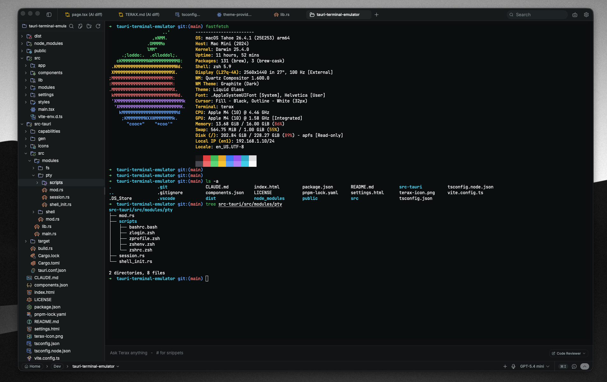
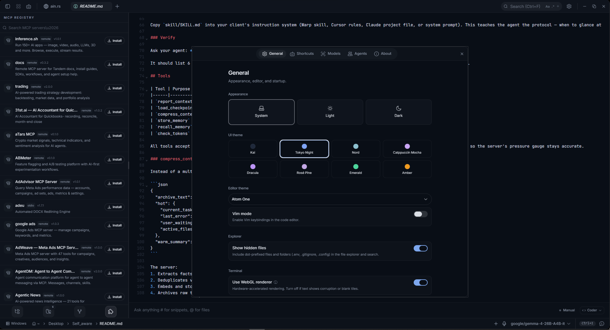
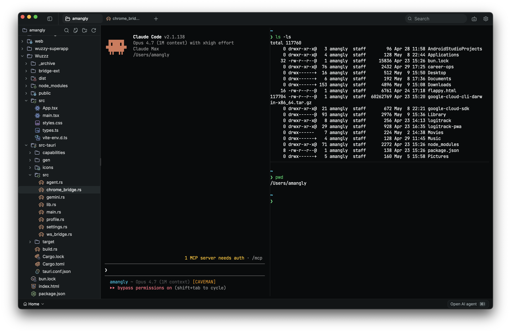
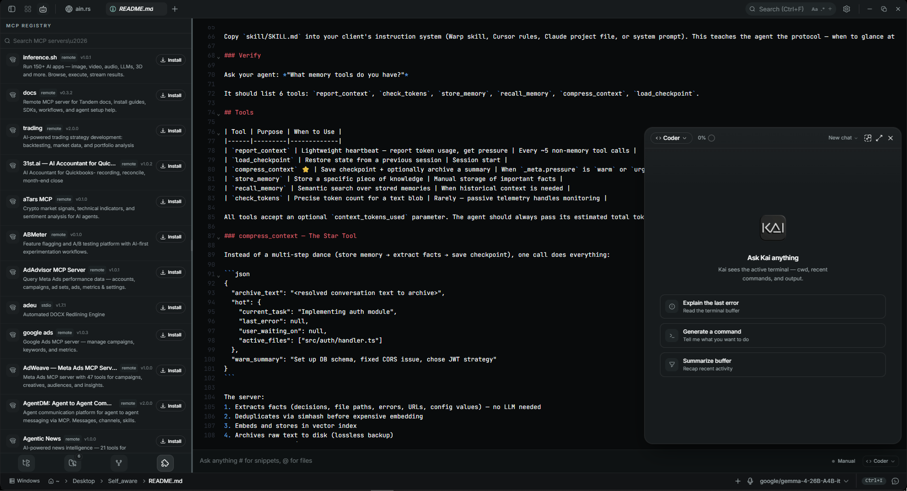
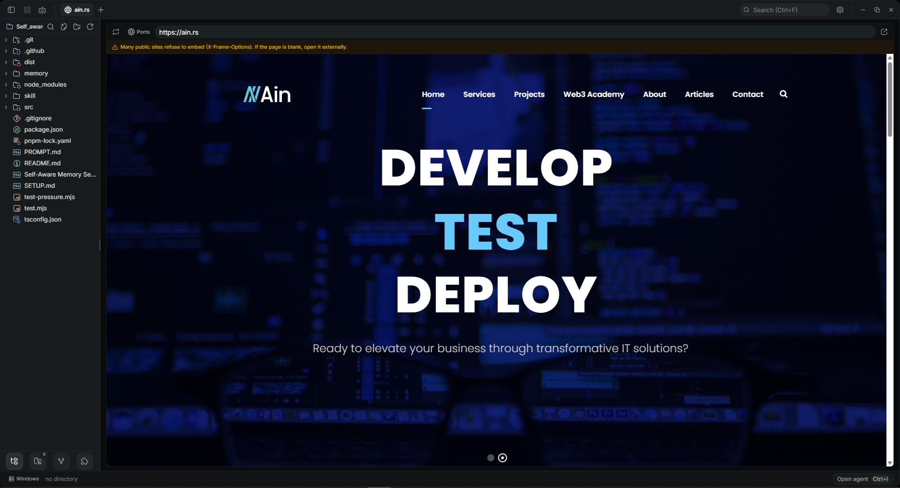

Scope
01 / 05Everything in one window
No browser tabs, no context switching. Terminal, editor, AI, and dev tools — unified.
| Component | Covers |
|---|---|
| terminal | xterm.js with WebGL rendering. Multi-tab, split panes, and shell integration for bash, zsh, PowerShell, and cmd. |
| editor | CodeMirror 6. 44 languages, find & replace, Vim mode, and 9 color themes. |
| ai agent | Reads, writes, and runs code. Edit-diff approval flow, auto-approve modes, automatic context recovery, long-term reminders, voice dictation, and spoken replies. |
| multi-project | Several projects, one window. A left rail of projects, each with its own tabs, tree, chats, and sessions — all alive in the background, one click to switch. |
| group chats | Agents that talk to each other. Cross-project group chats: put agents from different projects in one conversation and have them coordinate, review, and split work. Built-in and custom personas join with full tool parity. |
| mail & social | Gmail + X, read-only. Let the agent check your inbox or scan X for reactions and sentiment. It cannot send mail or post, like, or follow — credentials stay in your OS keychain. |
| assistant | Telegram bridge. Chat with your agent from your phone — text, voice notes, photos, and generated media, owner-locked to you. Monitor projects with /tell and approve agent actions with inline buttons. |
| mcp | External tool servers via the Model Context Protocol. Browse and install from the official registry. |
| media gen | Image & video generation. GPT Image 2, Nano Banana 2, Grok Imagine, and Veo 3.1 — from chat, with inline preview. Kling, Seedance & more via their official MCP servers. |
| explorer | File tree. Catppuccin icon theme, fuzzy search, inline rename, multi-select batch actions, drag-to-terminal, image & PDF preview. |
| preview | Web preview. A built-in browser for local dev servers — live-reload previews right next to your terminal, no alt-tabbing. |
| api tester | REST client. Method selector, headers, body editor, and JSON pretty-print — test endpoints without leaving the terminal. |
| git | Stage, commit, push, review diffs from the sidebar — with optional GPG signing for GitHub's Verified badge. |
| tray | Closes to the tray. Agents, watches, and the assistant keep running with the window closed; quiet OS notifications surface approvals and finished runs, and Quit from the tray is the only true exit. |
Keyboard
02 / 05Built by people who live in a shell.
Use Ctrl on Windows & Linux.



- Installer
- <10 MB
- Languages
- 44
- AI providers
- 12
- Themes
- 9
- Telemetry
- 0
Providers
03 / 05Works with every provider.
Bring your own key. Cloud APIs, local models, or your own endpoint. No lock-in.
Also on board. Image generation (GPT Image 2, Nano Banana 2, Grok Imagine) and video generation (Veo 3.1) — Kling, Seedance, and more are one MCP install away. Plus restart-safe long-term reminders, spoken replies (local Piper, OpenAI TTS, or AssemblyAI), and read-only Gmail & X tools.
Install
04 / 05Get Kai in seconds.
Native installers for every desktop OS. No account, no telemetry.
macOS
Apple silicon & Intel. Download the disk image, drag Kai to Applications.
↓ Download for macOSWindows
Self-contained installer (no admin required). WebView2 is bundled for offline setup.
↓ Download for WindowsLinux
AppImage, Debian, and RPM packages. The AppImage bundles its own media framework.
↓ Download for LinuxStart
05 / 05Start building with Kai.
Free, open source, no account required.